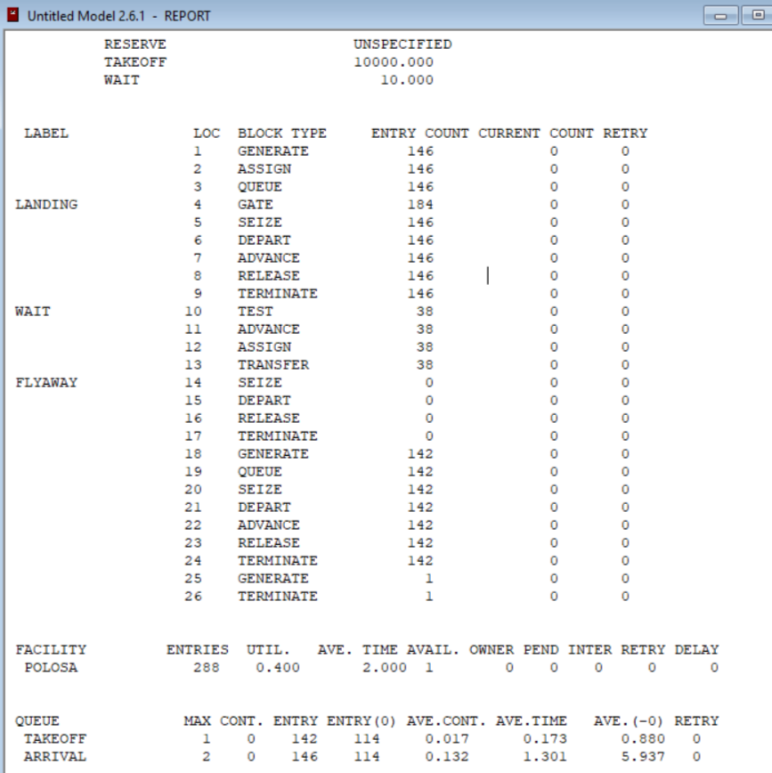

Задания для самостоятельной работы
Горяйнова А.А.
Российский университет дружбы народов, Москва, Россия
Реализовать с помощью gpss модели работы вычислительного центра, аэропорта и морского порта.
Реализовать с помощью gpss:
Кол-во самолетов, которые: - взлетели: 142 - сели: 146 - отправлены на запасной аэродром: 0 Коэффициент загрузки взлетно-посадочной полосы - 0,4. Большую часть времени полоса была свободна
{#fig:004width=50%}
В результате выполнения данной лабораторной работы я реализовала с помощью gpss: